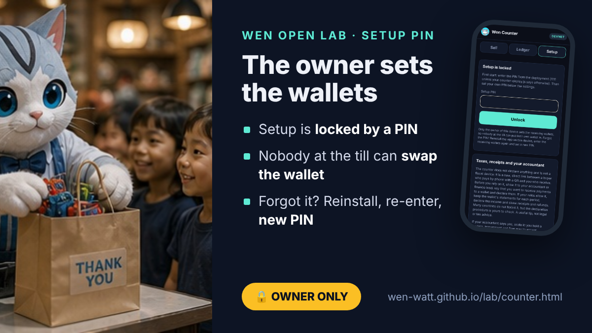

7.1단계: 수신 전용 안전검사 57개 · 공개
- 0 · 로드맵
- 1 · 영수증과 보증
- 2 · 크리에이터 로열티
- 3 · B2B 인보이스
- 4 · 결제 브리지
- 5 · 시뮬레이터
- 6 · Devnet: 직접 재현
- 7 · 계산대
- 7.1 · 안전
- ✓ · 신뢰 사슬
- ★ · 이점과 활용
- ✎ · 열 가지 해설
- ▶ · 영상
- ? · 독자 발견
돈을 받는 일은 늘 비용 항목이었습니다. 단말기, 계약, 인증된 앱, 중간에 낀 누군가. 우리는 그 시장을 깊이 들여다보고 정반대를 만들었습니다. 받기만 할 수 있는 계산대. 보내지도, 서명하지도, 지갑에 닿지도 못하므로 거기서 훔칠 것도, 그것을 통해 되가져갈 것도 없습니다. 결제가 도착하면 돈은 철저히 당신의 지갑이 관리합니다.
수신 전용 프로토콜
1 · 나가는 길 없음. 계산대는 지갑에 연결하지 않고, 서명을 요청하지 않으며, 키를 갖지 않습니다. 환불, 이체, 인출은 소유자의 지갑 앱 안에서만 일어납니다.
2 · 코드상 읽기 전용. 페이지는 체인에 정확히 세 가지 읽기 요청만 보낼 수 있습니다. 다른 요청은 기기를 떠나기 전에 코드 자체가 막습니다.
3 · 주입 없음. 메시지 리스너도, 액션 링크도, 원격 코드도 없고, 엄격한 콘텐츠 보안 정책이 있으며, 네트워크에서 온 것은 HTML로 삽입하지 않습니다. 외부 API가 계산대나 지갑을 조종할 수 없습니다.
4 · 지갑이 곧 신원. 수신 주소는 설정할 때 온체인에서 확인하고 모든 QR 화면에 표시하므로(앞뒤 다섯 글자, 지갑 이름) 계산원과 구매자가 비교할 수 있습니다.
이것이 끊임없는 지출을 하나의 상수로 바꿉니다. 운영 비용도, 거래 상대도, 뒷문도 없이 돈을 받는 방법.
태양계처럼 투명하게: 법률과 재무 측면
모델 전체가 그림 하나에 들어갑니다. 태양은 Solana 네트워크: 모든 것이 그 빛 속에서 움직이고, 누구나 볼 수 있습니다. 행성은 지갑: 저마다 자기 축으로 돌며 주인의 말만 듣습니다. Wen Counter는 망원경: 행성 하나가 빛을 받는 것을 지켜보고 적어 둡니다. 망원경은 행성을 움직일 수 없습니다.
그래서 법률과 재무의 장치는 돈이 있는 곳, 지갑에 있습니다:
- 소유는 결제가 상점 지갑에서 확인되는 순간 시작됩니다. 계산대는 단 1초도 자금을 보관하지 않습니다.
- 환불, 이체, 인출은 지갑 소유자의 결정이며, 휴대폰이나 컴퓨터의 지갑 앱에서 소유자 자신의 통제(비밀번호, 기기, 팀 승인) 아래 이루어집니다.
- 기록은 체인에서는 공개, 상점 장부에서는 비공개입니다. 모든 판매에 서명이 있고, 모든 서명은 회계사나 감사인이 확인할 수 있습니다.
- 세금과 규정 준수는 도구가 아니라 사업을 따릅니다. 상점은 자기 나라의 규칙에 따라 소득을 신고합니다. 계산대는 그 그림에 수수료도, 중개인도, 숨은 당사자도 더하지 않습니다.
키우기: 계산대 지갑과 매일 정산
같은 수신 전용 규칙이 노점 하나에서 체인점까지, 서버 없이 거의 비용 없이 커집니다:
- 계산대마다 계산대 지갑 하나. 계산대마다 근무 책임자가 관리하는 간단한 지갑이 있습니다. 계산대는 거기로 받기만 하고 다른 일은 할 수 없습니다.
- 매일 정산. 하루가 끝나면 책임자가 지갑 앱에서 매출을 계산대 지갑에서 회사 지갑(예: Squads 멀티시그 볼트)으로 옮깁니다. 트랜잭션 하나, 네트워크 수수료 한 번.
- 계산대에서 환불. 낮 동안 책임자는 그날의 시재 범위 안에서 회사 지갑을 건드리지 않고 계산대 지갑으로 구매자에게 환불할 수 있습니다.
- 중요한 키는 회사가 쥡니다. 금고는 자금을 옮기려면 여러 승인이 필요하고, 휴대폰 하나를 잃어도 잃는 것은 계산대 하나의 하루치뿐입니다.
- 계산대별 장부. 계산대마다 자기 CSV를 내보내고, 회사는 모든 계산대와 모든 정산을 온체인에서 주소와 서명으로 봅니다.
로드맵은 짧고 거의 공짜입니다. 이미 가진 휴대폰, 무료 지갑, 구매자가 내는 판매당 네트워크 수수료 한 번, 당신이 내는 매일 정산당 한 번.
전 세계 개발자와 소매 체인에게 보내는 공개 메모
- 계산대는 수신 전용으로 두세요. 안이 아니라 둘레에 만드세요. 주문 시스템, 주방 화면, 인쇄한 QR 태그, 영수증 NFT, CSV에서 회계나 ERP로 내보내기.
- 지출은 지출이 있어야 할 곳에: 멀티시그 승인과 지출 한도 같은 자체 통제가 있는 지갑에 두고, 계산대에는 두지 마세요.
- 모든 결제를 다섯 검사로 확인하고(참조, 수신자, 토큰, 금액, 성공) 수신 주소를 화면에 보여 주세요.
- 자유롭게 복사하고, Wen을 밝히세요. NOTICE가 붙은 Apache-2.0: Wen Open Lab과 Wen 사슬. 코드를 바꿨다면 변경된 빌드라고 밝히세요.
- devnet에서 시범 운영하세요. 실제 돈을 쓰기 전에, 새 빈 지갑으로.
공개적으로 시험한 것
세 그룹의 검사, 모두 저장소에 있고, 상점 기능(유형 있는 번호 지갑, 본사 보기, 영수증, 환불 메모, 기간별 내보내기, 언어 사전)을 더한 뒤 2026년 11월 12일에 모두 통과했습니다. 여전히 읽기 요청은 세 가지뿐.
핵심 로직 · 검사 25개 · node counter-core.test.js
| 검사 | 결과 |
|---|---|
| 무작위 키 200개의 base58 왕복 | ✓ |
| 알려진 주소는 32바이트로 디코딩, 쓰레기 값은 거부 | ✓ |
| 모든 참조 키가 유효한 주소 | ✓ |
| 금액: 소수 자릿수, 0, 음수, 지수 형식 거부 | ✓ |
| 결제 URL 형식과 퍼센트 인코딩 | ✓ |
| SOL 결제 검증됨 | ✓ |
| 금액 부족 거부 | ✓ |
| 참조 없음 거부 | ✓ |
| 실패한 트랜잭션 거부 | ✓ |
| USDC 결제 검증됨 | ✓ |
| 잘못된 토큰 거부 | ✓ |
| 새 토큰 계정으로의 첫 결제 검증됨 | ✓ |
| 소액 결제 요율(3 → 12.9%, 25 → 4.1%, 100 → 3.2%) | ✓ |
| 결제 조합의 절약 모델 | ✓ |
| 주소 확인: 새 주소, 지갑, 프로그램, 토큰, 기타 | ✓ |
| 매출 추정 | ✓ |
| "오늘 당신이 지킨 돈"의 같은 날 묶기 | ✓ |
| 내보내기 기간: 일, 주, 월, 연, 작년, 분기, 사용자 지정, 잘못된 날짜 거부 | ✓ |
| 환불 메모는 "refund:"와 유효한 트랜잭션 ID, 쓰레기 값 거부 | ✓ |
| 구매자 영수증 텍스트에 "세무 영수증 아님" 표시 | ✓ |
| 지갑 태그: 번호, 유형, 이름(#4 · Tips · Bar tips) | ✓ |
| 본사 보기: 지갑과 토큰별로 묶은 판매, 알 수 없는 지갑은 따로 | ✓ |
| 빈 장부의 본사 보기는 비어 있음 | ✓ |
| 판매 메모를 memo로: 주문 ID와 메모, 한 줄, 최대 120자, 영수증에는 "용도:"로 | ✓ |
| 설정 PIN: 숫자 4~8자리만 | ✓ |
통제 불가, 코드 읽기로 · 검사 13개 · node counter-safety.test.js
| 검사 | 결과 |
|---|---|
| 지갑 제공자를 절대 건드리지 않음 | ✓ |
| 어떤 종류의 연결이나 서명 호출도 없음 | ✓ |
| 키, 키 쌍, 시드 문구 없음 | ✓ |
| 읽기 요청은 세 가지뿐이며 허용 목록에 있음 | ✓ |
| 들어오는 API 없음: 메시지 리스너, 액션 URL, 원격 코드 없음 | ✓ |
| 엄격한 콘텐츠 보안 정책: 자체 스크립트만 | ✓ |
| 네트워크 데이터는 절대 HTML로 쓰지 않음 | ✓ |
| 오프라인 캐시는 체인을 건드리지 않음 | ✓ |
| 참조, 수신자, 토큰, 금액, 성공이 모두 맞을 때만 결제로 인정 | ✓ |
| 인터페이스 단어는 핵심 지문에 묶여 있음: 번역이 바뀐 핵심에 올라탈 수 없음 | ✓ |
| 인터페이스 단어는 텍스트로만 쓰고 HTML로는 절대 쓰지 않음 | ✓ |
| 설정은 PIN 뒤에: 잠금 해제 전에는 숨김, 저장·새 PIN·장부 지우기 보호, 나가면 잠김, PIN은 솔트를 더한 SHA-256으로만 보관 | ✓ |
| 배포 파일에는 매개변수(설정 PIN과 언어)만 있고 코드는 없음 | ✓ |
통제 불가, 실제 휴대폰 브라우저에서 · 검사 19개 · node browser-safety.e2e.js
테스트는 어떤 접촉이든 기록하는 가짜 지갑(Solana, Phantom, Solflare, Backpack, Jupiter)을 심고, 상점 이름과 메모에 악의적 텍스트를 입력하고, 네트워크에서 악의적 응답을 줍니다.
| 검사 | 결과 |
|---|---|
| 설정은 잠긴 채로 열림: 지갑 설정 숨김 | ✓ |
| 틀린 PIN 거부 | ✓ |
| 배포 PIN(1111)으로 설정 잠금 해제 | ✓ |
| 메모는 결제 요청(message와 memo)에 인코딩되어 실리며, 절대 실행되지 않음 | ✓ |
| 네트워크에서 온 악의적 "서명" 거부 | ✓ |
| 다른 주소로의 결제 거부 | ✓ |
| 상점 이름과 메모의 악의적 텍스트는 텍스트로 보여 주고 실행하지 않음 | ✓ |
| 메모는 글자 그대로 저장되고 표시됨 | ✓ |
| 결제 후 구매자에게 영수증 제공 | ✓ |
| 환불 버튼이 "refund:"와 원래 트랜잭션 ID를 줌 | ✓ |
| 기간별 내보내기는 파일 이름에 기간을 붙임 | ✓ |
| 판매 메모가 CSV에 들어감 | ✓ |
| 설정을 나가면 다시 잠김 | ✓ |
| 부서 지갑으로의 판매는 기본 지갑이 아니라 그 지갑을 기준으로 검증 | ✓ |
| 결제 화면에 지갑을 번호, 유형, 이름으로 표시 | ✓ |
| 본사 보기가 지갑별로 판매를 합산 | ✓ |
| 페이지에 심은 가짜 지갑은 한 번도 읽히거나 호출되지 않음 | ✓ |
| 네트워크에 닿은 것은 읽기 요청뿐 | ✓ |
| 스크립트 오류 없음 | ✓ |
직접 다시 돌려 보기
cd lab/counter
node counter-core.test.js # 25 checks
node counter-safety.test.js # 13 checks
python3 -m http.server 8771 &
node browser-safety.e2e.js http://localhost:8771/ # 19 checks, needs Playwright같은 파일이 키트에 들어 있어 상점이나 개발자가 자기 사본을 확인할 수 있습니다.
설정 PIN: 계산대의 누구도 지갑을 바꿀 수 없다
공용 기기에서 진짜 위험은 해커가 아니라 계산대에서 자기 수신 지갑을 넣는 사람입니다. 그래서 설정은 PIN으로 잠깁니다. 첫 PIN은 counter-deploy.js의 배포 매개변수이며(기본 1111, 공개되어 있으니 바꾸세요), 소유자가 설정에서 새 PIN을 정합니다. 설정을 나가면 잠기고, 다섯 번 틀리면 30초 멈추며, 장부를 지우려면 PIN이 필요하고, PIN은 솔트를 더한 SHA-256으로만 저장됩니다.
PIN을 잊었다면: 기기에 앱을 다시 설치하고, 수신 지갑을 다시 입력하고, 새 PIN을 정하세요. 간단하고 안전한 흐름입니다. 재설치하면 계산대에 지갑이 없게 되고, 수신 주소는 모든 QR에 표시되며, 매출이 회사 지갑으로 들어오지 않으니 바꿔치기는 숨길 수 없습니다. PIN은 인터페이스를 잠글 뿐, 지갑 키가 아니며 돈을 옮길 수 없습니다. 계산대는 애초에 돈을 옮길 수 없으니까요.

공개 감사: 확인하고 알려 주세요
Wen Counter의 감사는 열려 있고 끝나지 않습니다. 코드를 읽고, 위의 검사를 내 기계에서 다시 돌리고, 계산대가 서명하거나 보내거나 보여서는 안 될 것을 보여 주게 만들어 보고, 찾은 것을 알려 주세요. 공개 저장소에 이슈를 열면 됩니다(링크는 출처에). 맞는 발견은 새 검사가 되고, 감사의 말과 함께 독자 발견에 한 줄로 남습니다.

사용자의 책임
솔루션은 본인 책임으로 사용합니다. 우리는 장치를 줄 뿐, 당신이 그것으로 무엇을 하고 사본에서 무엇을 바꾸는지 모릅니다. 우리가 밝히고 위의 검사가 원본 빌드에 대해 증명하는 것은 장치 자체입니다. 돈을 가져가지 않고, 보관하지 않고, 수수료를 받지 않습니다. Solana 네트워크의 절차를 엄격히 따릅니다. 지갑은 당신의 것이고 당신이 씁니다. 영수증, 환불, 기록, 신고는 당신 쪽 일이니, 절차는 회계사와 확인하세요.
모든 카드와 그림을 담은 솔루션 전체 이야기: Wen Counter: 모든 상점을 위한 무료 오픈 계산대.
전체 글: dev.to의 개발자용(코드, 다섯 항목 검증, 검사 57개)과 Hashnode의 상점·재무용(누가 돈을 통제하는가, 규모를 키우기 전 일곱 가지 답).
이 검사가 다루지 않는 것
- 코드는 제3자 감사를 받지 않았습니다. 인증서가 아니라 우리의 공개 테스트입니다.
- 이미 감염된 휴대폰은 무엇이든 보여 줄 수 있습니다. 믿을 수 있는 기기를 쓰고 최신으로 유지하세요.
- 가짜 페이지 사본은 다른 주소를 보여 줄 수 있습니다. 그래서 주소가 모든 QR 화면과 구매자 지갑에 나타납니다. 앞뒤 다섯 글자를 비교하세요.
- 도착한 뒤 자금의 안전은 지갑의 안전입니다. 시드 문구를 지키고, 팀이라면 Squads 같은 멀티시그를 쓰세요.
- 먼저 새 빈 지갑으로 devnet에서. 금융·세무·법률 조언이 아닙니다.